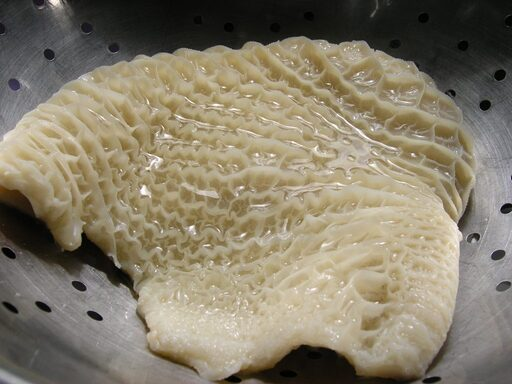

Stewed tripe and onions

Tripe is the first or second stomach of a cow or other ruminant used as food. Its use as a term of execration is a load of tripe.
Ingredients
- 2lb tripe
- 5 large onions
- 3 cloves
- 2 oz butter
- 2 oz flour
- 1.5 pt milk
- pepper and salt
- 1 tbsp white breadcrumbs
- 0.25 pt cream
Method
- Wash the tripe in several lots of cold water. Cut into pieces 1 inch square.
- Put the tripe, sliced onions, cloves, butter, and milk in a saucepan. Cover with a tight fitting lid. Bring to the boil and allow to simmer gently until the tripe is tender-about 75 mins.
- Lift out the cloves. Thicken with blended flour and allow to cook for a further 5 minutes. Season and add cream. Finally add in breadcrumbs. Serve on a hot dish with tripe in the centre and sauce pured over and around.
Homepage